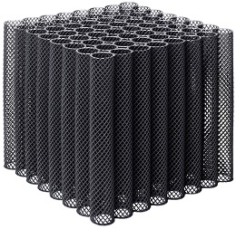
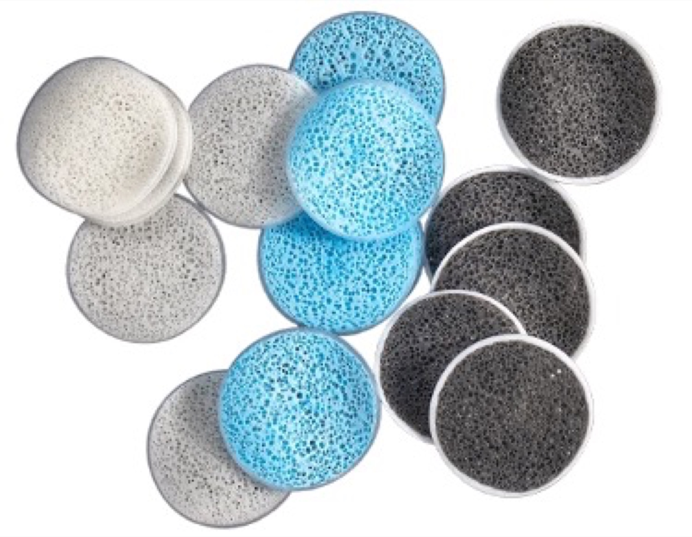

K1, K3 and K5 style moving bed biofilm reactor (MBBR) carrier media, SAFF fixed-film media, bio-block and bio-chip media in virgin HDPE and polypropylene, with protected surface area from 400 to 900 m2/m3. Supplied to STP and ETP biological treatment plants across India, the Middle East, Africa and worldwide.

Genoasis is a trusted supplier of MBBR (Moving Bed Biofilm Reactor) and SAFF biofilm carrier media for sewage treatment plants (STP) and effluent treatment plants (ETP). Our carriers are moulded from virgin HDPE and polypropylene in K1, K3 and K5 style wheels, plus bio-block and bio-chip media, delivering a protected specific surface area from 400 up to 900 m2/m3 for dense, attached-growth biomass.
MBBR media drive BOD and COD removal, nitrification and denitrification in a compact reactor footprint. Adding carrier media to an existing activated sludge tank retrofits it to an IFAS or MBBR process, increasing capacity and improving effluent quality without civil expansion - just send us your tank volume, flow and load and our engineers recommend the media type and fill fraction.
MBBR and SAFF media are supplied across India (Chennai, Mumbai, Delhi, Bangalore, Hyderabad), the Middle East (UAE, Saudi Arabia, Qatar, Oman, Kuwait, Bahrain), and Africa (Nigeria, Kenya, South Africa, Ghana). We respond to every enquiry within 1 hour.
Classic K1, K3 and K5 style carrier wheels in virgin HDPE for moving bed biofilm reactors. Protected surface area from ~400 m2/m3, ideal for BOD/COD removal and nitrification in STP and ETP tanks.

Submerged aerated fixed-film (SAFF) media for fixed-bed biological reactors. High void ratio for stable attached biomass, low head loss and reliable nitrification in municipal and industrial plants.

Modular bio-block media in polypropylene for fixed-film and trickling-filter reactors. Structured blocks give a large, evenly distributed surface for biofilm growth in compact treatment units.

High-area bio-chip carriers delivering up to ~900 m2/m3 of protected surface area. Maximum attached biomass per cubic metre for smaller reactor volumes and high-load capacity upgrades.
| Media Type | Material | Specific Surface Area | Application |
|---|---|---|---|
| K1 / K3 MBBR Carrier | Virgin HDPE | ~400-600 m2/m3 | BOD/COD removal, nitrification |
| SAFF Fixed-Film | Polypropylene | ~400-500 m2/m3 | Fixed-bed STP/ETP, nitrification |
| Bio-Block | Polypropylene | ~150-250 m2/m3 | Trickling filter, fixed-film reactor |
| Bio-Chip High-Area | Virgin HDPE | up to ~900 m2/m3 | High-load capacity upgrades, denitrification |
Protected specific surface area up to 900 m2/m3 for dense attached biomass and compact reactor volumes.
Moulded from virgin HDPE and polypropylene for long service life, chemical resistance and consistent density.
Retrofit existing activated sludge tanks to MBBR/IFAS to boost capacity without civil expansion.
Free media type and fill-fraction sizing from our engineers based on your flow and load data.
Genoasis supplies every component alongside your MBBR media.
Aeration blowers and pumps to fluidise MBBR media and supply oxygen to the biomass.
View PumpsNutrient dosing, defoamers and treatment chemicals for STP and ETP biological process.
View ChemicalsFine-bubble diffusers and tube settler packs for aeration and clarification in STP/ETP.
View MediaRetaining sieves, screens and spare parts to keep your MBBR reactor running.
View SparesTechnical answers for STP/ETP plant engineers and buyers in India, the UAE and the GCC.
We supply the full range of biofilm carrier media: K1, K3 and K5 style MBBR carrier wheels, SAFF fixed-film media, bio-block media and high-area bio-chip media. All carriers are moulded in virgin HDPE or polypropylene with a protected specific surface area from 400 up to 900 m2/m3.
Our MBBR biofilm carrier media provide a protected specific surface area ranging from around 400 m2/m3 for K1 carriers up to 900 m2/m3 for high-area bio-chip media. Higher surface area means more attached biomass per cubic metre, allowing smaller reactor volumes and higher BOD/COD and nitrification loading rates.
Yes. Adding MBBR carrier media to an existing activated sludge aeration tank retrofits it to an IFAS or MBBR process, increasing treatment capacity and improving nitrification without civil expansion of the tank. Send us your tank volume, flow and load and our engineers will recommend the media type and fill fraction.
Yes. We supply MBBR and SAFF biofilm media across the Middle East (UAE, Saudi Arabia, Qatar, Oman, Kuwait, Bahrain), India, and Africa (Nigeria, Kenya, South Africa, Ghana, Tanzania, Ethiopia). We handle export documentation and shipping, and respond to enquiries within 1 hour.
Send your tank volume, flow and load requirement - we'll recommend the right biofilm carrier media and fill fraction and quote it with matching blowers, diffusers and spares.